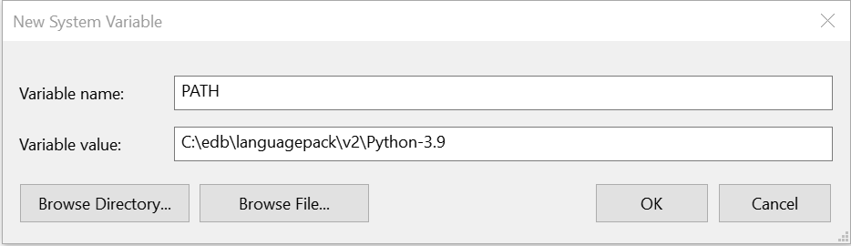
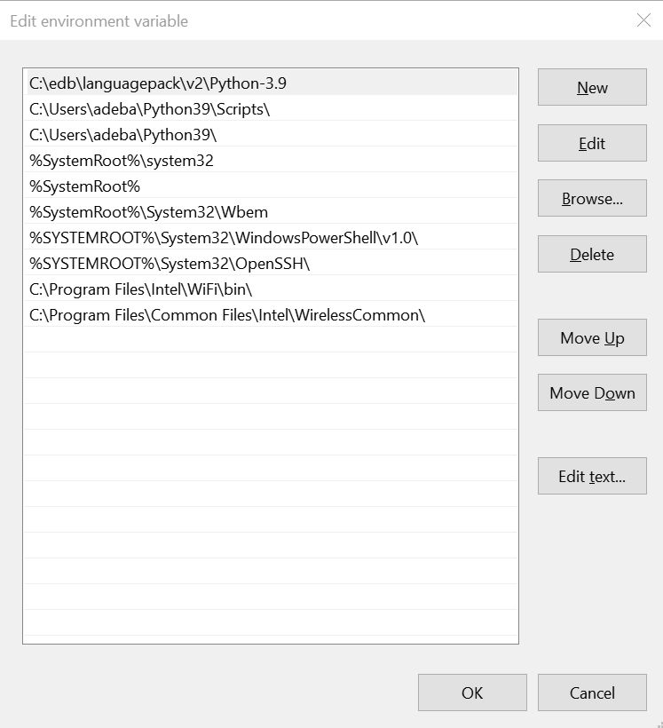
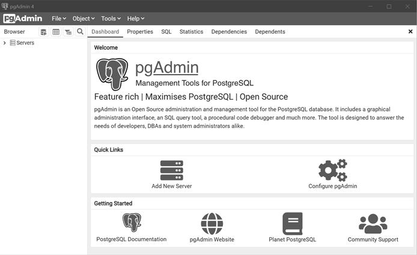
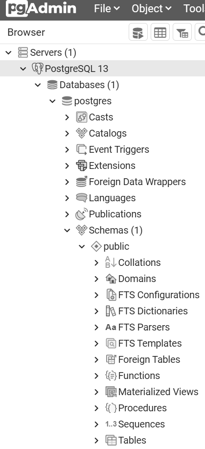
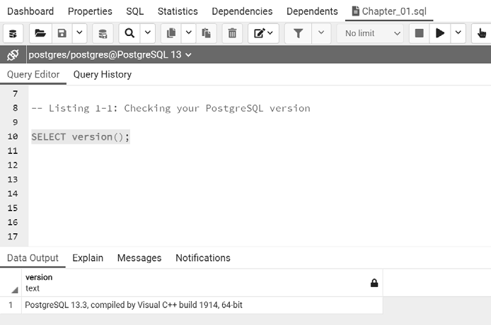

第 1 章 设置编码环境¶
兵马未动，粮草先行。为了完成本书布置的练习，我们首先要做的就是获取资源并安装软件。本章将向你展示如何安装文本编辑器、如何下载示例代码和数据，还有如何安装PostgreSQL数据库系统及其配套的图形用户界面pgAdmin。本章还会告诉你如何在有需要的时候获取帮助。阅读完本章之后，你的计算机将拥有一个健壮的环境，足以让你学习如何使用SQL进行数据分析。
强烈建议你不要跳过本章。正如我的老学究高中老师以往说的那样：“三思而后行，防范于未然”。按照本章介绍的步骤行事可以有效地避免之后出现问题。
我们的首个任务就是设置一个适用于数据处理的文本编辑器。
安装文本编辑器¶
我们将要载入到SQL数据库中的源数据，通常会以逗号分隔值（CSV）格式储存在文本文件里面，第5章中的“处理带有分隔符的文本文件”一节将对这种格式做更详细的介绍。目前来说，我们要做的就是找到一个文本编辑器，它能够打开CSV格式的文件并且不会无意中伤害到文件中的数据。
数据处理软件对于数据的格式通常会有非常严格的要求，而文字处理程序和电子表格程序这类常见的商业软件，往往会自作主张地把样式或是隐藏字符添加到文件里面，所以使用这些程序处理数据可能会引发问题。举个例子，如果你使用Microsoft
Excel打开一个CSV文件，那么程序为了让数据变得更容易阅读，它将自动改变一些数据：比如说，它会把3-09这个条目代号看作是日期并将其格式化为9-Mar。因为文本编辑器只处理纯文本，并且它不会对纯文本执行包括格式化在内的任何修饰，所以程序员总是使用它们来编辑源码文件、数据和配置文件：在任何情况下，我们都希望文本仅仅被看作是文本，而不是其他别的东西。
任何文本编辑器都能够满足本书的要求，如果你已经有自己的心头好，那么请放心地继续使用它。但如果你还没有找到适合自己的文本编辑器，那么以下是一些我使用过并且推荐的产品。除非另有说明，否则这里提到的大部分编辑器都是免费的，并且都能够适用于macOS、Windows还有Linux。
微软的Visual Code Studio：https://code.visualstudio.com/
GitHub的Atom：https://atom.io/
Sublime HQ的Sublime Text（可以免费试用，但需要付费才能持续使用）：https://www.sublimetext.com/
Don Ho开发的Notepad++ （只能在Windows上使用）: https://notepad-plus-plus.org/ （注意，这和Windows内置的Notepad.exe不是同一个应用程序）
那些喜欢在命令行工作的进阶用户可能会希望使用以下这两个文本编辑器中的一个，它们默认安装在某些版本的macOS和Linux中。
由Bram Moolenaar和开源社区共同开发的Vim：https://www.vim.org/
由Chris Allegretta和开源社区共同开发的GNU nano：https://www.nano-editor.org/
如果你还没有使用过文本编辑器，那么请下载并安装一个，然后学习一下如何使用它来打开文件夹并处理文件。
在此之后，我们要做的就是获取本书使用的示例代码和数据。
从GitHub下载代码和数据¶
完成本书练习所需的全部代码和数据都可以通过下载获得。为此，你需要执行以下步骤：
访问位于No Starch Press网站上的本书主页：https://nostarch.com/practical-sql-2nd-edition/
点击页面中的Download the code from GitHub以访问包含本书资源的GitHub仓库。
在GitHub的“Practical SQL 2nd Edition”页面上，有一个Code按钮。点击它，然后选择Download ZIP，这样就可以把ZIP格式的压缩文件保存到你的电脑里面。请把这些文件放在你触手可及的位置，比如“桌面”。（如果你是GitHub用户，你还可以克隆或者fork这个仓库）。
解压文件。之后你将会看到一个名为practical-sql-2-main的文件夹，其中包含本书将要用到的各种文件以及子文件夹。同样，你可以把这个文件夹放到你易于查找的位置。
注意
为了让我们接下来将要安装的PostgreSQL数据库能够读写
practical-sql-2-master文件夹中的内容，Windows用户需要为其提供相应的权限。为了做到这一点，请先用鼠标右键点击该文件夹，接着点击属性，然后点击其中的安全选项卡。之后，点击编辑，然后点击添加，再然后在“对象名称”的框体中键入Everyone并点击确定。最后，在用户列表里面选中“Everyone”，并勾选“允许”一栏下面的所有可选框，然后点击应用和确定。
在
practical-sql-2-master文件夹中，你会发现与本书每一章对应的Chapter_XX子文件夹，其中的XX就是相应的章号。每个子文件夹都包含了某一章对应的代码示例，还有一个扩展名为.sql的Chapter_XX文件。这是SQL代码文件，你可以用文本编辑器或者本章后面将要安装的PostgreSQL管理工具将其打开。注意，为了节约空间，书中的某些代码示例会被截断，在这种情况下，你需要使用.sql文件中完整展示的代码才能完成练习。当你在代码示例中看到--snip--时，说明该示例已被截断。
现在，先决条件已经满足，是时候开始安装数据库软件了。
安装PostgreSQL和pgAdmin¶
在这一节，我们将要安装PostgreSQL数据库系统及其配套的图形管理工具pgAdmin。你可以把pgAdmin看作是管理PostgreSQL的一个有用的可视化工作区：它的界面能够让你看见数据库对象、管理设置、导入和导出数据，还可以编写查询——也即是通过代码从数据库里面检索数据。
使用PostgreSQL的一个好处是开源社区已经为启动和运行PostgreSQL提供了非常棒的指南。以下各个小节大致描述了截至本文写作期间，在Windows、macOS和Linux上安装PostgreSQL的方法，但是随着软件或操作系统的新版本发布，相应的步骤可能会发生变化。请查阅每一节提到的文档还有包含本书资源的GitHub仓库，我会维护那里的文件以便更新和回答常见问题。
注意
为了获取最新的安全补丁及新特性，我建议你为自己的操作系统安装最新版本的PostgreSQL。在本书中，我假设你使用的是 11.0或以上版本。
在Windows安装¶
我推荐Windows用户使用由EDB公司（也即是原来的EnterpriseDB公司）提供的安装程序，EDB是一家为PostgreSQL用户提供支持和服务的公司。通过EDB下载PostgreSQL软件包还会同时获得pgAdmin和Stack Builder，后者包含的一些工具我们不仅会在本书后面用到，可能还会对你的整个SQL生涯有所帮助。
为了获得安装包，我们需要访问https://www.postgresql.org/download/windows/并点击“EDB”一节中的Download the installer链接，然后链接会把我们引导至EDB网站的下载页面。除非你正在使用的是安装了32位Windows的旧电脑，否则请选择64位Windows能够使用的最新版PostgreSQL。
注意
本节接下来的内容覆盖的是Windows 10的安装步骤。如果你使用的是Windows 11，那么请查看包含本书资源的GitHub仓库，以便了解安装步骤之间的具体差异。
在下载完安装包之后，请按照以下步骤安装PostgreSQL、pgAdmin以及其他组件。
右键点击安装包，选择以管理员身份运行，并在系统提示是否允许应用对你的计算机进行修改时回答“是”。安装程序首先会执行一系列设置任务，然后呈现一个初始的欢迎屏幕。你可以通过点击进入下一步。
在选择安装目录的界面中使用默认目录。
在选择组件的界面中，通过勾选方框选择安装PostgreSQL服务器、pgAdmin工具、Stack Builder和命令行工具。
选择储存数据的位置。如果选择默认，那么数据将被放置在PostgreSQL安装文件夹的data子文件夹中。
为默认的起始数据库的超级用户账号
postgres设置一个密码。PostgreSQL在安全和权限方面做得非常好。选择服务器将要监听的端口号。默认的端口号为
5432，除非你有其他数据库或者应用程序在使用这个端口号，否则最好还是使用这个号码。如果默认的端口号已经被其他应用占用，那么你可以选择5433或者其他数字来代替。选择你所在的地区，一般来说保持默认就可以了。之后点击摘要屏幕，开始安装，这可能需要几分钟才能完成。
安装完成之后，程序会询问你是否需要启动EnterpriseDB的Stack Builder以获取额外的软件包。请确保复选框已经被勾选，然后点击完成。
Stack Builder启动之后，请在下拉菜单中选择“安装PostgreSQL”并点击下一步。程序将开始下载一系列附加应用。
展开“空间扩展”的菜单，根据你所安装的PostgreSQL版本选择相应的PostGIS包。你可能会看到有多个不同版本的PostGIS包可选，如果是的话那么请选择最新版本。另外，展开插件、工具和实用程序的菜单并选择EDB语言包，以安装包括Python在内的编程语言支持。几次点击之后，安装程序就会开始下载所需的附加组件，请等待直至下载完成。
当安装所需的文件下载完毕之后，请点击下一步以安装语言和PostGIS组件。对于PostGIS ，你需要同意许可协议；之后一直点击直到出现组件选择界面。请确保“PostGIS”和“创建空间数据库”已经被选中，点击下一步，接受默认的安装位置，然后再次点击下一步。
根据提示输入数据库密码，然后按照提示继续安装PostGIS 。
在要求注册
PROJ_LIB和GDAL_DATA环境变量时回答是。此外，在要求设置POSTGIS_ENABLED_DRIVERS和启用POSTGIS_ENABLE_OUTDB_RASTERS环境变量的提问出现时回答是。最后，点击“完成”按钮以完成安装并退出安装程序。根据版本的不同，你有可能会被提示需要重启电脑。
安装完成之后，Windows的启动菜单应该会出现两个新的文件夹：一个是PostgreSQL的，而另一个则是PostGIS的。
接下来的一节将会介绍如何为可选的Python语言支持设置相应的环境变量。但是由于本书需要到第17章才会介绍如何在Python中使用PostgreSQL，因此如果你现在只想尽快开始学习如何实际操作PostgreSQL，那么可以直接跳到后面的“使用pgAdmin”一节，等之后有需要时再回来学习如何设置Python。
配置Python语言支持¶
我们将在第17章学习如何在Python编程语言中使用PostgreSQL。在上一节，我们安装的EDB语言包已经提供了Python支持，但是为了将语言包文件的位置添加到Windows系统的环境变量里面，我们还需要执行以下步骤：
点击Windows任务栏上的搜索图标，键入控制面板，然后通过点击控制面板的图标来打开Windows控制面板。
在控制面板应用的搜索框里面键入环境，接着在显示的搜索结果列表里面点击编辑系统环境变量，然后将出现一个系统属性对话框。
在系统属性对话框的“高级”选项卡里面，点击环境变量。新打开的对话框将包含两个部分：用户变量和系统变量。在系统变量部分，如果你没有看到
PATH变量，那么请执行步骤a，创建一个新的变量；如果PATH变量已经存在，那么继续执行步骤b来修改它。如果你在系统变量部分没有看到
PATH，那么请点击新建以打开“创建新系统变量”对话框，如图1-1所示。
图1-1：在Windows 10中创建新的
PATH环境变量在变量名一栏，键入
PATH。在变量值一栏，加入C:\edb\languagepack\v2\Python-3.9。（除了直接键入变量位置之外，你还可以点击浏览目录，然后在浏览文件夹对话框里面导航至该目录。）在你手动输入路径或者通过浏览导航至该目录之后，请点击确定来关闭对话框。如果
PATH变量已经存在于系统变量部分，那么请高亮选中它并点击编辑，接着在展示的变量列表里面点击新建并键入C:\edb\languagepack\v2\Python-3.9。（跟前面一样，除了直接键入目录的位置之外，你还可以通过浏览目录并导航的方式确定目录的位置。）
在添加语言包的位置之后，请在变量列表里面高亮选中它，然后点击向上移动直至该路径到达变量列表的顶端。这样一来，即便你安装了其他版本的Python，PostgreSQL也能够找到正确的Python版本。 最后得到的结果应该会跟图1-2中的高亮行一样。请点击OK以关闭对话框。
 图1-2：在Windows 10里面编辑已存在的
PATH环境变量最后，在系统变量部分，点击新建。接着在新建系统变量对话框的变量名称一栏，键入
PYTHONHOME，并在变量值的一栏键入C:\edb\languagepack\v2\Python-3.9。完成之后，在所有对话框中点击确定以关闭它们。注意，这些Python路径将在下次重启系统之后开始生效。
如果你在安装PostgreSQL的过程中遇到任何问题，那么请查看本书的在线资源，我会在那里指出不同版本的变化，并对其引发的问题进行解答。如果你无法通过Stack Builder安装PostGIS，那么请尝试从PostGIS的网站https://postgis.net/windows_downloads/下载独立的安装程序，并按照https://postgis.net/documentation/的指示进行安装。
现在，请跳转到后面的“使用pgAdmin”一节继续阅读。
在macOS安装¶
我建议macOS用户使用Postgres.app，它是一个开源的macOS应用程序，包含了PostgreSQL和PostGIS扩展以及其他一些好东西。此外，为了调用上述应用，你还需要安装pgAdmin图形用户界面以及Python语言。
安装Postgres.app和pgAdmin¶
执行以下步骤：
访问https://postgresapp.com/，下载最新版本的应用程序，它将是一个以
.dmg结尾的磁盘镜像文件。通过双击打开
.dmg文件，然后将应用程序图标拖拽到你的应用程序文件夹里面。在应用程序文件夹里面，双击应用图标以启动Postgres.app。（如果你看到一个对话框，显示由于无法验证开发者而导致无法打开该应用程序，那么请点击取消。然后右键单击应用图标并选择打开。）在Postgres.app打开之后，点击初始化以创建和启动PostgreSQL数据库服务器。
之后你的菜单栏会出现一个小小的大象图标，表明有数据库正在运行。为了设置内置的PostgreSQL命令行工具以便在将来使用它们，你需要打开终端应用程序并在提示符之后运行以下这段代码（你可以在 Postgres.app的网站https://postgresapp.com/documentation/install.html找到并复制这行代码）：
sudo mkdir -p /etc/paths.d &&
echo /Applications/Postgres.app/Contents/Versions/latest/bin | sudo tee /etc/
paths.d/postgresapp
执行这段代码时，系统可能会要求你输入登陆Mac时的密码，请按要求照做。上述命令在执行时应该不会产生任何输出。
接下来，因为Postgres.app不包含pgAdmin，所以请根据以下步骤安装pgAdmin：
访问pgAdmin网站的macOS下载页面：https://www.pgadmin.org/download/pgadmin-4-macos/。
选择最新版本并下载安装程序（寻找以.dmg结尾的磁盘镜像文件）。
先双击.dmg文件，然后点击提示框以接受相应的条款，最后将pgAdmin的大象应用程序图标拖拽到你的应用程序文件夹里面。
在macOS上进行安装相对来说是比较容易的，但如果你遇到任何问题，那么请查看Postgres.app的文档：https://postgresapp.com/documentation/和pgAdmin的文档：https://www.pgadmin.org/docs/。
安装Python¶
本书第17章将教你如何通过Python编程语言调用PostgreSQL。但如果你想要通过Python调用Postgres.app，那么就必须安装特定版本的Python，即便macOS已经预装了Python（并且你可能已经设置了额外的Python环境）。为了启用Postgres.app可选的Python语言支持，请执行以下步骤：
访问Python官方网站https://www.python.org/，点击下载菜单。
在释出版本的列表中，找到并下载Python 3.9的最新版本。请根据你的Mac所使用的处理器选择正确的安装程序——较旧的Mac使用的是英特尔芯片，而较新型号使用的则是Apple芯片。下载的文件应该是一个以.pkg结尾的Apple软件包文件。
双击软件包文件以安装Python，点击查看许可协议，并在安装完成之后关闭安装程序。
Postgres.app对Python的要求可能会随着时间而改变，请访问Postgres.app的文档https://postgresapp.com/documentation/plpython.html以及本书的在线资源以了解最新情况。
现在，请跳转到后面的“使用pgAdmin”一节继续阅读。
在Linux安装¶
对于Linux用户来说，安装PostgreSQL可能会非常简单，也可能会非常困难，根据我的经验，Linux世界就是这样运作的。大多数情况下，安装工作都可以通过几条命令来完成，只是找到这些命令需要在互联网上进行一番侦察。幸运的是，包括Ubuntu、Debian和CentOS在内，大部分流行的Linux发行版都将PostgreSQL包含在它们的标准包里面。但是，由于有些发行版比其他发行版更注重更新，所以通过标准包安装的PostgreSQL有可能不是最新的。如果你的发行版并没有预装PostgreSQL，又或者你想要把PostgreSQL升级至更新的版本，那么最好还是查阅发行版的文档以了解安装PostgreSQL的最佳方法。
此外，PostgreSQL项目还为RedHat 变种、Debian和Ubuntu维护着一个完整的、最新版本的软件包库，具体的细节可以通过访问https://yum.postgresql.org/和https://wiki.postgresql.org/wiki/Apt获知。上述网站提供的包内置了PostgreSQL的客户端和服务器端、pgAdmin（如果可用的话）、PostGIS和PL/Python。根据用户使用的Linux发行版不同，这些包的具体名字也会有所不同，并且使用这些包的用户还需要手动启动PostgreSQL数据库服务器。
pgAdmin一般来说并不是Linux发行版的一部分。为此，我们需要访问pgAdmin的网站https://www.pgadmin.org/download/，确认自己的平台是否被支持，并获得安装该应用所需的最新安装说明。如果你喜欢冒险的感觉，那么也可以在https://www.pgadmin.org/download/pgadmin-4-source-code/找到如何从源代码构建应用程序的说明。在完成上述工作之后，请跳转到后面的“使用pgAdmin”一节继续阅读。
Ubuntu安装示例¶
为了演示如何在Linux上安装PostgreSQL ，以下是在代号为Hirsute Hippo的Ubuntu 21.04上安装PostgreSQL 、pgAdmin 、PostGIS和PL/Python 的具体步骤。 这里用到的指令来自https://wiki.postgresql.org/wiki/Apt和https://help.ubuntu.com/community/PostgreSQL/ 的“基本服务器设置”部分。 如果你使用的也是Ubuntu ，那么你可以按照这些步骤进行安装。
通过CTRL+ALT+T组合按键打开终端。接着，通过在提示符之后键入以下命令，为PostgreSQL APT资源库导入密钥：
sudo apt-get install curl ca-certificates gnupg
curl https://www.postgresql.org/media/keys/ACCC4CF8.asc | sudo apt-key add -
之后，通过运行以下命令，创建文件/etc/apt/sources.list.d/pgdg.list ：
sudo sh -c 'echo "deb https://apt.postgresql.org/pub/repos/apt $(lsb_release
-cs)-pgdg main" > /etc/apt/sources.list.d/pgdg.list'
在此之后，通过执行以下两条命令，更新包列表并安装PostgreSQL和pgAdmin （此处安装的是PostgreSQL 13 ，你可以根据自己的情况选择可用的更新版本）：
sudo apt-get update
sudo apt-get install postgresql-13
现在你应该已经启动了PostgreSQL
了。请在终端键入以下这命令，该命令会以默认的postgres用户身份登录服务器并连接postgres数据库，并使用psql交互式终端（第
18 章将对该终端做深入的介绍）：
sudo -u postgres psql postgres
psql启动之后会显示版本信息以及postgres=#提示符。在提示符之后键入以下命令可以为用户设置一个密码：
postgres=# \password postgres
此外，我还喜欢创建一个跟Ubuntu用户名同名的用户账号。为此，请在postgres=#提示符之后键入以下命令，并将其中的anthony替换成你自己的Ubuntu用户名：
postgres=# CREATE USER anthony SUPERUSER;
你可以通过在psql的提示符后面键入\q来退出它，之后你应该就能重新看到系统终端的提示符。
为了安装pgAdmin，我们首先需要导入资源库的密钥：
curl https://www.pgadmin.org/static/packages_pgadmin_org.pub | sudo apt-key add
之后，执行以下命令，创建文件/etc/apt/sources.list.d/pgadmin4.list并更新包列表：
sudo sh -c 'echo "deb https://ftp.postgresql.org/pub/pgadmin/pgadmin4/
apt/$(lsb_release -cs) pgadmin4 main" > /etc/apt/sources.list.d/pgadmin4.list
&& apt update'
然后我们就可以安装pgAdmin 4了：
sudo apt-get install pgadmin4-desktop
最后，为了安装PostGIS和PL/Python扩展，我们需要在终端执行以下命令（别忘了把版本号替换成你的Python版本）：
sudo apt install postgresql-13-postgis-3
sudo apt install postgresql-plpython3-13
你可以查阅Ubuntu和PostgreSQL的文档以获取最新的安装方法。安装过程中遇到的任何问题都可以求助搜索引擎，Linux相关的问题通常都可以通过这种手段解决。
使用pgAdmin¶
在配置工作的最后，让我们来熟悉一下pgAdmin这个监督和管理PostgreSQL的工具。尽管pgAdmin是免费软件，但它的性能一点也不容小觑：它不仅功能齐全，而且跟微软的SQL Server Management Studio等付费工具一样强大。通过pgAdmin提供的图形界面，用户可以对PostgreSQL的服务器及数据库的多个方面进行配置，并使用SQL查询工具编写、运行和保存查询语句——这也是本书接下来要做的。
启动pgAdmin并设置主密码¶
如果你已经按照前面的步骤在操作系统上安装了pgAdmin，那么你应该可以通过以下方法来启动它。
Windows：进入“开始”菜单，在“PostgreSQL”文件夹里面找到你所安装的版本，点击它，然后选择pgAdmin4。
macOS：点击应用程序文件夹中的pgAdmin图标，请确保你已经启动了Postgres.app。
Linux：启动方法可能会根据Linux发行版的不同而不同。一般来说，在终端提示符里面输入
pgadmin4然后按下回车键应该就可以了。在Ubuntu中，pgAdmin会作为应用程序出现在活动概览里面。
在pgAdmin的启动画面出现之后，应用程序就会被打开，如图1-3所示。如果这是你第一次启动pgAdmin，那么它还会弹出一个提示，要求你设置一个主密码。这个密码跟你在安装PostgreSQL时设置的密码并无关系。请设置一个主密码，然后点击“确定”。
 图1-3： 在Windows 10上运行的pgAdmin应用
注意
在macOS上，当你第一次启动pgAdmin时，系统可能会弹出一个对话框，显示“pgAdmin4无法打开，因为它来自一个身份不明的开发者”。在这种情况下，请通过右键单击图标然后点击打开。接下来弹出的对话框会提供选项让你能够打开该应用，请选择它，之后你的Mac就会记住你已经授予了该权限。
pgAdmin的布局包括一个位于左侧的垂直面板，用于显示对象浏览器，你可以在这里看到可用的服务器、数据库、用户以及其他对象。横跨屏幕上方的是一系列菜单项，而位于菜单栏下面的则是多个标签，这些标签用于展示数据库对象以及性能的不同方面。下面让我们开始连接数据库。
连接默认的postgres数据库¶
PostgreSQL是一个数据库管理系统，这意味着它是一个允许你定义、管理和查询数据库的软件。当你安装PostgreSQL的时候，它将创建一个数据库服务器，也即是一个在你电脑之上运行的应用程序实例，该实例还包含了一个名为postgres的默认数据库。数据库由一系列对象组成，其中包括表、函数还有其他很多东西，并且数据库也是实际储存数据的地方。我们通过SQL语言和pgAdmin来管理储存在数据库里面的对象和数据。
在接下来的一章，我们将通过在PostgreSQL服务器里面创建自己的数据库来组织自己的工作。但是现在，我们需要先通过连接默认的postgres数据库来探索
pgAdmin 。做到这一点需要执行以下步骤：
在对象浏览器里面，点击服务器节点左边的向下箭头以展示默认服务器。根据你使用的操作系统，默认服务器的名字可能会是localhost或者PostgreSQL x，其中x为Postgres的版本号。
双击服务器名称。如果有提示，就输入你在安装时设置的数据库密码（你还可以通过保存密码来避免将来的重复输入）。pgAdmin在建立连接的过程中会显示一条简短的消息。在连接成功之后，服务器名字下面应该会出现几个新的对象元素。
先展开数据库分支，然后再展开默认的
postgres数据库。在
postgres分支的下面展开Schemas对象，然后再展开public分支。
你的对象浏览器面板看上去应该跟图 1-4 差不多。
 图1-4：pgAdmin的对象浏览器
注意
如果pgAdmin没有在服务器一栏显示默认的服务器，那么你需要手动添加它。请用右键单击服务器，然后点击创建 ▸ 服务器。接着在对话框的常规选项卡里面，为你的服务器键入一个名字，并在连接选项卡的“主机名称/地址”框里面键入localhost 。之后，填写你在安装PostgreSQL时设置的用户名和密码，然后点击保存。执行上述步骤之后，你应该就能看到被列出的默认服务器了。
这一系列对象定义了数据库服务器的每一个特性。其中包括表，也即是储存数据的地方。通过在pgAdmin里面访问表，你可以查看表的结构，又或者对表执行操作。我们将在第2章使用这个浏览器来创建一个新的数据库，并保持默认的postgres不变。
探索查询工具¶
pgAdmin应用包含一个查询工具，它可以让你在上面编写和执行代码。为了打开查询工具，你需要在pgAdmin的对象浏览器里面，通过在任意数据库中点击它一次来高亮显示它。比如说，点击postgres数据库，然后选择工具
▸
查询工具。然后你会看到三个面板：一个查询编辑器，一个用于在工作时保存代码片段的便笺本，还有一个显示查询结果的数据输出方框。你可以打开多个选项卡，从而连接不同的数据库并为它们编写查询，又或者以自己想要的方式组织代码。为了打开另一个标签，你可以在对象浏览器里面点击某个数据库，然后通过菜单再次打开查询工具。
代码清单1-1中的语句能够返回你所安装的PostgreSQL版本，我们可以运行这个简单的查询并查看它的输出。这段代码以及书中展示的所有示例都可以通过位于https://nostarch.com/practical-sql-2nd-edition/的在线资源来获取，只要点击页面上的Download the code from GitHub链接就可以了。
SELECT version();
代码清单1-1 ：查看你的PostgreSQL版本
你可以亲自把代码键入到查询编辑器里面，又或者从GitHub下载本书的代码之后，点击pgAdmin工具栏上的打开文件图标，导航至保存代码的文件夹，然后打开Chapter_01文件夹中的Chapter_01.sql文件。为了执行语句，你需要高亮选中以SELECT开头的代码行，然后点击工具栏上的执行/刷新图标（它的形状有点像播放按钮）。之后PostgreSQL应该会在pdAdmin的数据输出方框里面返回服务器的版本，如图1-5所示（你可能需要在数据输出方框里面通过点击右边缘并向右拖动来扩展列宽，从而看到全部结果）。
 图 1-5 ：pgAdmin的查询工具显示查询结果
本书将在之后介绍更多查询相关的知识，但是现在来说，你只需要知道这个查询使用了PostgreSQL特有的version()函数来检索服务器的版本信息即可。在图片展示的例子中，输出显示我正在使用PostgreSQL
13.3，此外它还显示了一些与构建PostgreSQL有关的额外信息。
注意
你从GitHub上下载的绝大部分示例代码文件都包含不止一个查询。如果你想要每次只执行一个查询，那么就需要先高亮选中相应的查询代码，然后再点击执行/刷新按钮。
自定义 pgAdmin¶
从pgAdmin菜单中选择文件 ▸ 首选项可以打开一个对话框，你可以在里面定义pgAdmin的外观和选项。这里有三个你可能感兴趣的地方：
杂项 ▸ 主题允许你在标准的浅色pgAdmin主题和深色主题中进行选择。
查询工具 ▸ 结果网格允许你为查询结果设置一个最大列宽。请在该对话框中选择列数据，然后将最大列宽的值设置为300。
浏览器部分允许你配置pgAdmin的样式并设置键盘快捷键。
要获得关于pgAdmin选项的更多信息，请从菜单中选择帮助 ▸ 在线帮助。在继续我们的冒险之前，你可以随意地探索这些首选项。
pgAdmin之外的选择¶
虽然pgAdmin非常适合新手，但它对于完成本书的练习来说并不是必须的。因此，如果你喜欢另一个能够跟PostgreSQL一起工作的管理工具，那么尽管使用它好了。此外，如果你想使用操作系统的命令行来完成本书的所有练习，那么第18章提供了通过命令行使用PostgreSQL交互式终端psql的操作说明。本书的附录里面还列举了一些可供探索的PostgreSQL资源，你可以在里面找到其他管理工具。
小结¶
现在，你已经通过文本编辑器、PostgreSQL和pgAdmin建立起了编码环境，是时候开始学习SQL并使用它从数据中发掘有价值的洞见了！
在接下来的第2章，我们将要学习如何创建数据库和表，还有如何载入数据并探索其中的内容。事不宜迟，让我们马上开始吧！